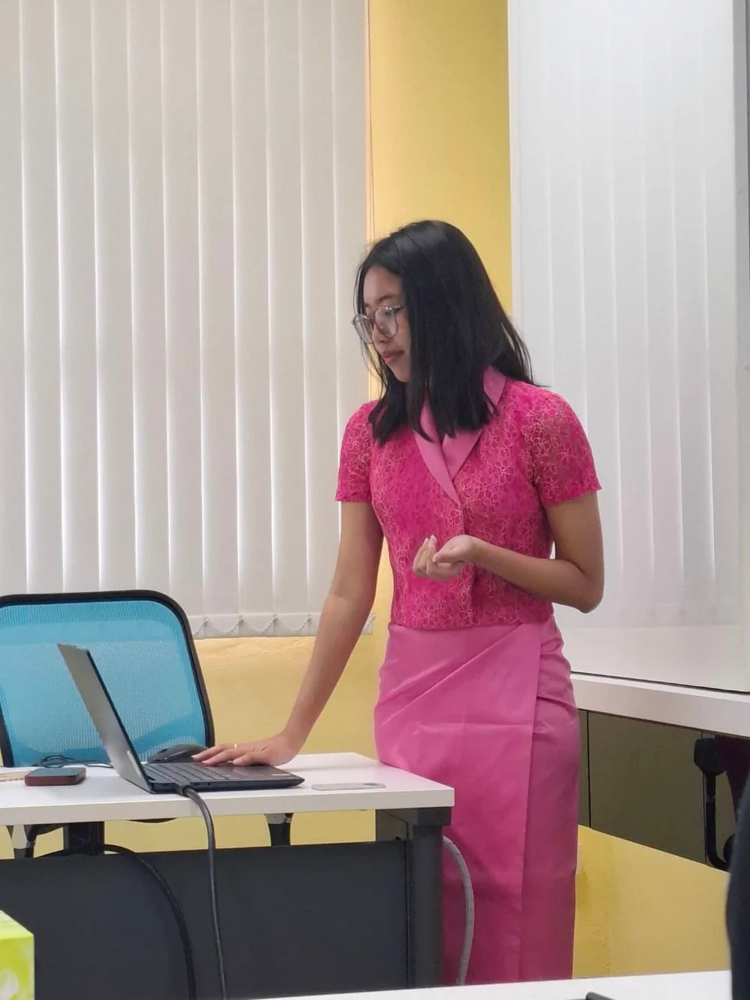
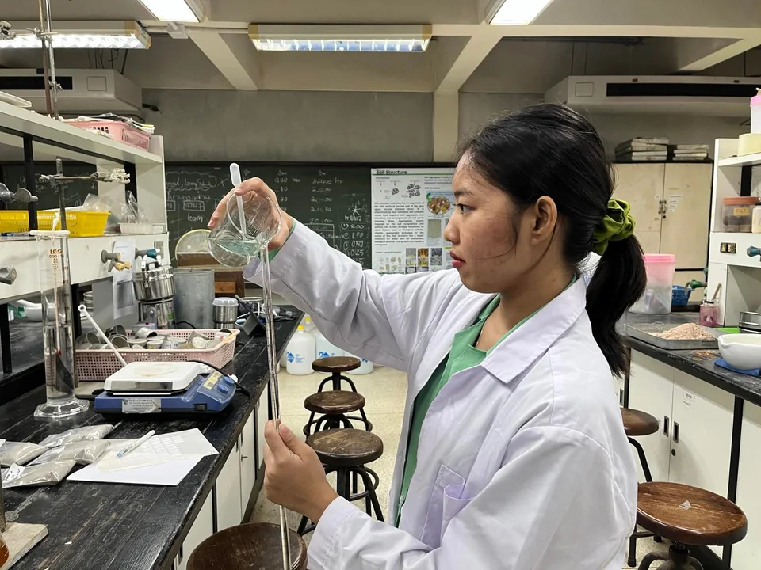
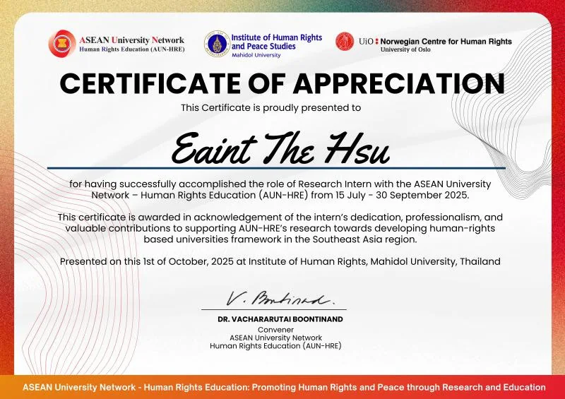
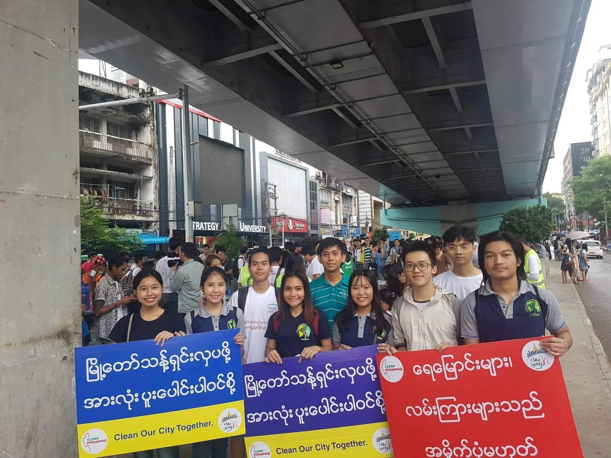
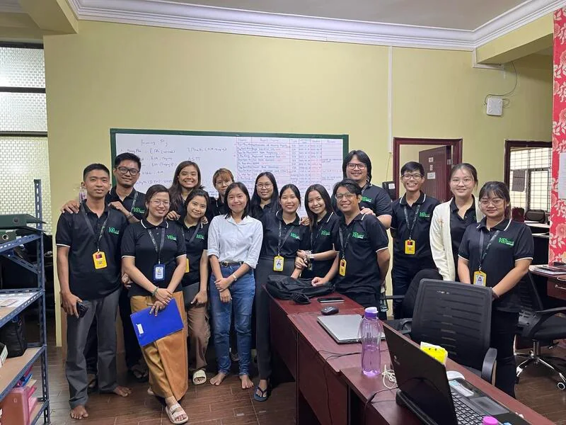

Research & analysis
Literature review, qualitative and quantitative research, environmental data, and R-based analysis.
Chiang Mai, Thailand
I’m Eaint, an environmental science researcher and programme support professional turning complex information into clear action across Southeast Asia.

Environmental science · Programme coordinationAbout
Based in Chiang Mai
Working across Southeast Asia
I connect environmental evidence with the people, programmes, and practical systems that help it create impact.
My experience spans ASEAN-focused research, environmental data management, project administration, youth engagement, and community consultation. I’m at my best when a project needs both analytical depth and calm, organised follow-through.
Document showcase
Both source PDFs are presented inside the website. Select a document to open the interactive viewer.
What I bring
Literature review, qualitative and quantitative research, environmental data, and R-based analysis.
Workflows, scheduling, meetings, records, operational support, and progress tracking.
Clear liaison across communities, project teams, university networks, and multicultural settings.
Research synthesis, compliance support, presentations, databases, and decision-ready records.
Selected work
A selection of research, regional coordination, data, and community initiatives.

Environmental research · R programming01 / Academic research
Designed and executed a study across Chiang Rai wetland ecosystems, using R to analyse quantitative data and reveal site-level environmental trends.

Regional cooperation02 / ASEAN University Network
Research, interviews, documentation, and internal data systems for a regional initiative.

Community engagement03 / Environmental Club
Campaign and event logistics, including an awareness session for 300 high school students.

Operations · Stakeholders04 / Environmental services
Supported managers with progress tracking and compliance documentation while coordinating with project proponents, communities, and internal teams.
Experience
Research teams, community programmes, and environmental projects all need someone who can see both the detail and the wider purpose.
Download full CV ↘ASEAN University Network (AUN) · Remote
Environmental Science Research Center · Chiang Mai University
U-Report Myanmar
EGuard Environmental Services Company · Yangon
University of Yangon Environmental Club
Education
Chiang Mai University, Thailand
GPA 3.93 / 4.00University of Yangon, Myanmar
GPA 5.00 / 5.00Certifications & languages
ISO 9001, ISO 14001 & ISO 45001
CMSP Training InstituteEnvironmental & Social Framework
World Bank GroupPersonal Safety & Security
DisasterReadyAdvocacy Skills for Young People
UNICEF MyanmarEnglishC1 — Advanced
MyanmarNative
RakhineNative
Let’s work together
Open to research, programme support, coordination, and sustainability opportunities.